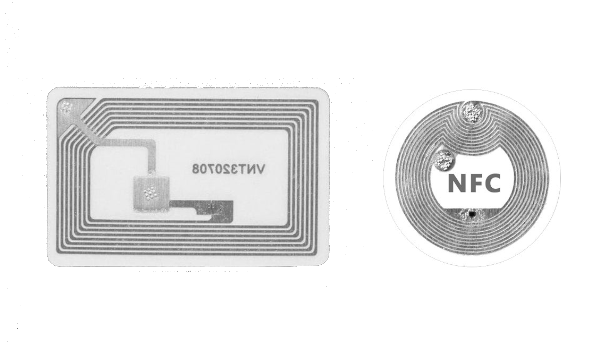
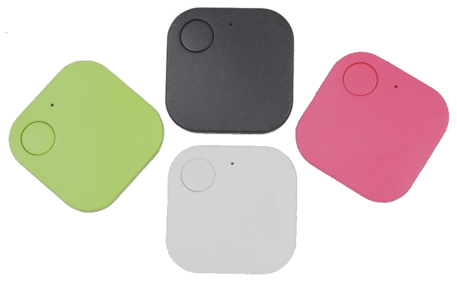
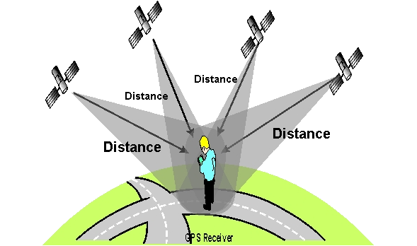

Research
Conducting Research on the Past Solutions and Different Technologies
Related Projects Review
Our task consists of creating a hospital porter tracking solution in order to increase the efficiency of porters within hospitals. In particular and contrary to other past projects, our solution focusses on tracking porters and setting them tasks in order to best coordinate delivery of medical freight using drones. This comes with the associated problems of timing porters based on drone arrival times.
It is important to review existing projects so that one may bring forward their merits in our solution. Additionally, by reviewing existing solutions, not only can we learn from the merits, we may also learn from any shortcomings and flaws with regard to previous projects.
UBI Solutions

UBI Solutions is a French software company primarily focussed on providing asset tracking solutions. It creates a variety of solutions for corporations in the food industry, laundry, retail and more. Typically solutions revolve around using RFID tags and mobile or fixed readers. [] However, other solutions are also used and the company's focus is providing an effective solution tailored to a client.
In this review we will look at one solution, picked among many of their projects due to its similarity to the context of our own project. It was in part picked randomly from several similar projects, due to said projects also being similarly well documented with similar merits. []
UBI Solutions' Hospital Assets Tracking makes use of BLE tags and beacons to track assets such as bed sheets moving throughout the hospital. They work on a gateway system where BLE gateways track individual BLE tags throughout the hospital. BLE tags each have unique identifiers that they transmit. In addition to tracking, the tags are fitted with shock, temperature and humidity sensors where relevant to track the health of the asset [].
Goals of the Solution
The main goals of the system are:
To free up staff time
Reducing loss of equipment due to theft
Reduce costs due to negligence
To reliably log asset usage data
Implement automatic preventative care of assets
Effectiveness of the Solution
The solution is effective, minimal and cost effective. It has a lot of the features that we would need for a hospital porter tracking system, where instead of assets we would track porters. It has some redundant features such as the sensors to detect health of the asset, however the overall principle is the same. It does however miss 1. a method to communicate to porters their tasks and 2. a method to decide which porters are optimal for tasks. Both features missing are quite essential and something we would have to explore ourselves.
RFID and NFC Tags
More notably, we see that UBI Solutions has picked BLE (Bluetooth Low Energy) tags instead of alternatives such as RFID(Radio-Frequency Identification) tags and NFC(Near Field Communication) tags. BLE tags have much further range of detection than RFID tags []. This enables better tracking of assets which we may not be able to scan individually due to their high number. For our project problem, hospital porters will often be in a hurry and may be stressed. In addition, hospital porters typically will not be used to scanning a tag whenever they walk past checkpoints. In hospitals, there is not time for error and mistake due to needing time to form a habit. As such, we similarly regard RFID tags as an inappropriate solution due to high potential for mistakes. This is quite different to UBI Solutions who most likely picked BLE beacons due to their concern for security.
Discussion on Merits and Pitfalls of NFC tags
NFC tags which UBI Solutions has used for other projects, and likely also considered for their hospital asset tracking solution are also inappropriate for our project due to the reasons outlined above. They are also only effective at short ranges.
BLE Tags
One might also be concerned that many BLE, RFID and NFC tags are not able to perform two way communication. From our requirements, we need the hospital porters to be able to reject tasks and set their busy status. This is for the sake of both porter information privacy, breaks and in case they are busy with other tasks that are set without the system, i.e. a Doctor directly asks a porter. However, it should be noted that in our solution, the tags will not be performing the communication. The tags will serve as markers of positions in the hospital and smartphones which pick up on their mac addresses will then post these addresses as location dater to the web server.
Discussion on Merits and Pitfalls of BLE
Further research on BLE beacons not only determines that they are typically long reaching enough and strong enough signal for the purposes of our project, but that they, like the name implies, are low energy and low maintenance []. They would minimally add to the operating costs of the hospital and are not likely to break. They are also extremely cheap and having many of these dotted around a hospital should not pose a problem with expenses. BLE beacons do however need to be installed and require careful planning.
Navenio: Hospital Staff Tracking
Navenio is an Oxford based company focussed on increasing ROI of hospitals. They achieve this with their smartphone based location tracking and task assignment solution to assign tasks. They have utilize a mixture of IMU (inertial measurement unit), GPS and wifi to accurately track staff locations. Further to this, they utilize a task assignment system and collect logistic data with some amount of automated processing to generate recommendations to increase efficiency.
As mentioned, Navenio's solution utilizes IMU, GPS and wifi to accurately track staff location. They utilize PDR (Pedestrian Dead Reckoning) algorithms to adjust for ways a smartphone is held and deep learning based correction of inertia discrepancies due to positioning of the phone. They also make use of camera data where possible.GPD and wi-Fi is used to accurately detect when someone enters or exits the building. The system is interestingly capable of multiple floor location and tracking. Maps of the hospital are automatically built using historical tracking data of all the staff.
Goals of the Solution
The main goals of the system are:
To free up staff time
Optimal assignment of tasks
Provide a solution that has no dependency on installing infrastructure
To reliably log movement data for efficiency recommendations
Effectiveness of the Solution
The solution is effective, minimal and cost efficient, installation wise. Development of the algorithms and potential problems may create heavy costs however. As the solution utilizes AI to accurately location track, extensive collection of phone movement data is required and will create heavy costs.
To pick the right technology, for our solution, we further research these technologies navenio uses and weigh their pros and cons.
Inertial Measurement Unit

Navenio's use of IMU tracks the directional movement of a phone through the hospital. IMU stands for Inertial Measurement Unit, which is a device that measures the orientation, velocity, and acceleration of an object. IMUs are commonly used in various applications, including aerospace, robotics, and navigation systems [].
An IMU typically contains a set of sensors, such as accelerometers and gyroscopes, which measure linear acceleration and angular velocity, respectively []. Some advanced IMUs may also include magnetometers and barometers, which can measure magnetic fields and atmospheric pressure, respectively [].
The IMU uses the data from these sensors to calculate the object's position, velocity, and orientation. The accelerometer measures the linear acceleration in three dimensions, which is then integrated to obtain velocity and position. The gyroscope measures angular velocity, which is also integrated to obtain the object's orientation.
However, IMUs are not perfect, and there are some common sources of error that can affect the accuracy of the measurements. For example, the accelerometer can be affected by vibrations or shocks [], while the gyroscope may drift over time due to temperature changes or manufacturing imperfections []. To mitigate these errors, IMUs may include algorithms that can filter out noise or use other sensors, such as magnetometers, to correct for drift [].
Discussion on Merits and Pitfalls of IMU
IMUs can track location data and movement with extremely low latency, compared to other potential tracking methods. This is likely why navenio has integrated them for their tracking solution. However IMUs are by no means a reliable technology for location tracking on their own, due to their frequent need for calibration, but more importantly the huge variation in their quality between phones. If we cannot be reliably certain of a phone's accuracy with regard to its location over time, we cannot use this technology on its own. Navenio utilizes this technology in combination with many other technologies to gauge error and correct this, in particular they cite using PDR algorithms, however due to both the costs that developing such algorithms would entail, our client's budget and the length of the project, this approach is not feasible.
Global Positioning System
GPS stands for Global Positioning System, which is a satellite-based navigation system used to determine the precise location of a receiver on the Earth's surface. The GPS system consists of a network of about 30 satellites orbiting the Earth, ground control stations, and GPS receivers.
A GPS receiver receives signals from multiple GPS satellites, which transmit radio signals containing information about their location and time []. The GPS receiver uses this information to calculate its own location, based on the time it takes for the signals to reach the receiver []. This mechanism is shown in the diagram below:
To determine its position, the GPS receiver needs to receive signals from at least four GPS satellites. The receiver measures the time it takes for each signal to travel from the satellite to the receiver. Using the time difference between the arrival of signals from multiple satellites, the GPS receiver can determine its distance from each satellite, and thus its position on the Earth's surface [].
The GPS system also takes into account the effect of the Earth's atmosphere on the radio signals. The atmosphere can cause the signals to be delayed or distorted, which can affect the accuracy of the GPS measurements. To correct for this, the GPS system uses a technique called differential GPS, which compares the GPS measurements from a stationary GPS receiver at a known location to those from a mobile receiver to determine the atmospheric effects and remove them from the calculations [].
Discussion on GPS Merits and Pitfalls
While GPS is generally effective at determining position, even in buildings with considerable obstacles, it struggles in several ways. GPS becomes more and more inaccurate when obstructed, and would not be suitable for a building with many thick firedoors, several floors and large metal devices to obstruct signal further, i.e. a hospital. The nature of how GPS functions also means that it is slow to update and this is not ideal for hospitals where time can be so critical and errors matter so much. As mentioned before, due to these flaws, Navenio likely integrates their other technologies, however, integrating so many technologies is out of the scope of this project due to the cost of development and low budget of our client.
Technology Review

Following the client meeting, we wrote up requirements, which can be seen in the requirements section of the portfolio blog. In an attempt to try and refine our requirements further, we conducted market research. Having set up the relevant communication channels with Apian such as Slack, WhatsApp and Email, we tried to confirm a tech stack with our client. This involved investigating the pricings, discussing budgets and caveats with different technologies and their competitors.
Knowing our client was working on a small budget, being a startup, we took a greater focus on budget options for Bluetooth tracking and communication. For instance, we asked the Computer Science help desk what BLE tracking devices they had available to help direct our choices. Furthermore, we explored funding options from UCL, discussing and writing emails to ask what UCL would be willing to fund. For example if UCL could fund a premium firebase subscription.
The potential tracking options we considered after were, low power BLE beacons which many
companies sold. Options we saw included Aruba, Zebra, Moko Smart and many others.
We considered GPS, however we knew this might not be feasible for hospitals with
many floors especially in the basement for example, so it was decided that this
would be a last option. We also considered using bluetooth and GPS in combination
for more accurate tracking.
At this stage, we could already foresee problems arising. For example, a group member who
had prior experience with bluetooth suggested that bluetooth may not be extremely accurate
due signal interferences and obstacles blocking signal such as a phone case, and walls,
particularly as many doors in hospitals are thick fire doors.
We knew that we would likely have to implement a mobile app for porters and a website for
administrators in the system. From discussing with Apian we knew that this was usually
specific people who assigned tasks to porters but could also be doctors themselves.
From this we could tell that we needed to decide on a frontend framework, how to implement
the app and how to store data in the backend. Hosting would also need to be handled.
As we knew that we were using several different platforms (mobile and web) we immediately
knew that React Native was a safe bet due to its performant and cross platform nature.
Some of our members also had experience with React Native making it an excellent choice.
After discussion we felt that React native would also be a viable option for the mobile app
but soon realized the levels of permissions that would be needed would warrant an application
and a webpage would not suffice.
Our client, Apian who had experience in the area also guided us to use create an Android app.
We decided that the app would be best written in Kotlin.
Bibliography
- Mishra, R. (2020). Fragment Lifecycle in Android. [online] GeeksforGeeks. Available at: https://www.geeksforgeeks.org/fragment-lifecycle-in-android/ [Accessed 14 Mar. 2023].